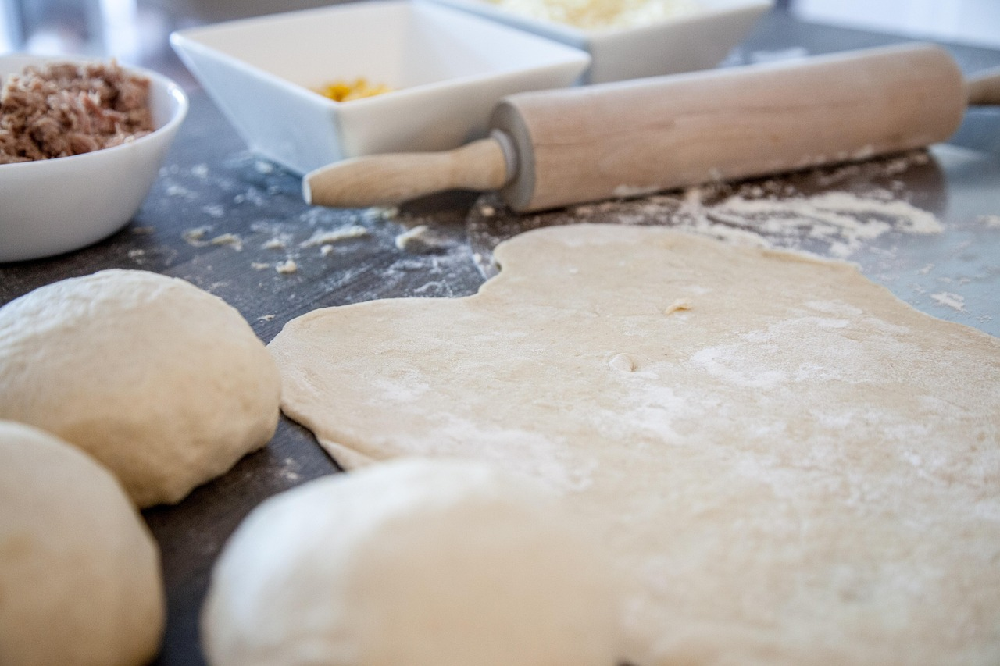

Pizza Dough

Recipe for Pizza Dough
Whether you're making your first homemade pizza dough surrounded by your family, or a seasoned pizza chef firing up your outdoor woodfire over. This pizza dough is made for you!
Ingredients:
- 2 ⅓ cups of all-purpose flour.
- 2 ¼ tsp of active dry yeast.
- 1 ½ tsp of sugar.
- ¾ tsp of fine sea salt.
- ¼ tsp of garlic powder.
- 2 Tbsp of olive oil.
- ¾ cup of warm water.
Steps:
- In a bowl, add your water warmed to roughly 100 degrees F, sugar, and active dried yeast. Allow the yeast 5-10 minutes to bloom.
- In a separate bowl mix your dry ingrediants. Add your Flour, Sea Salt, Garlic Powder.
- Now that your yeast has bloomed, add your olive oil to your water, then gradually add in your flour mixture while mixing.
- Once your dough is fully mixed, in a separate bowl drizzle in some olive oil and coat your bowl. This will help prevent the dough from sticking.
- Give your dough at least 30 minutes to rest in the bowl, covered with cerame wrap. Or, time till the dough doubles in size.
- Once your dough has doubled in size, punch down the dough ball to deflate and remove from your bowl
If the dough is overly sticky, feel free to lightly flour your working serface, and hands as needed.
- Now that we're ready to start shaping our dough lets go ahead and pre-heat your oven to 425F.
- Slowly strech your dough out into a pizza shape. Do not stretch too thin or aggresively. The dough will want to retain its shape. Stretch it, then give it a minute to rest and move back into shape, then repeat.
- Once shaped out to your desired thickness, move the dough onto your pizza pan lined with partchment paper.
- Add your desired toppings, and place your pizza in your over for 13-15 minutes depending on heat or until your pizza is to the desired cook.
For additional recipes, head back to our Home page to see what else we've got!